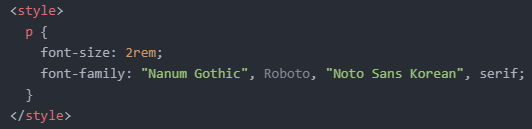
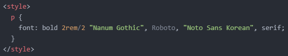
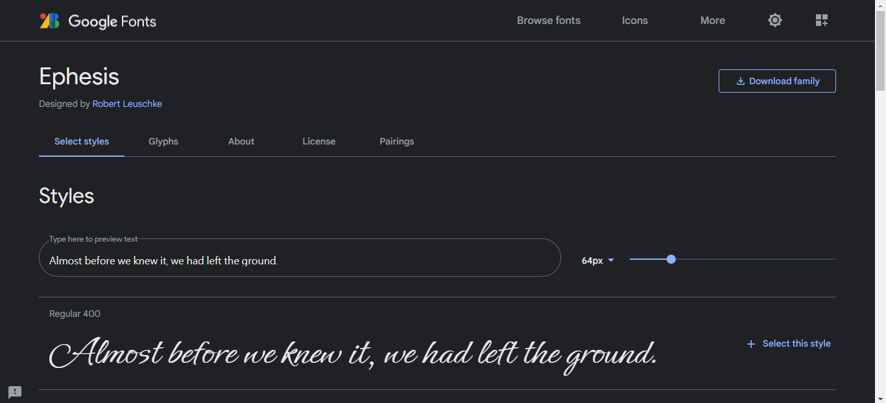
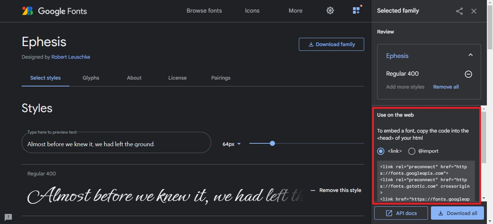
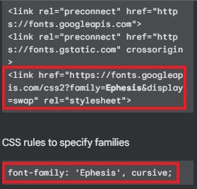
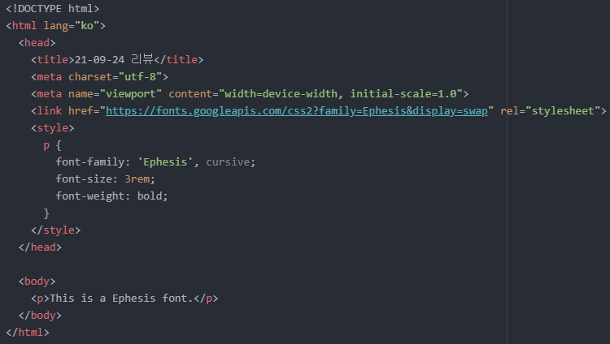

- 'font' 속성에 대해 알아보기
지금까지 배운 'font' 속성으로는 'font-size' 밖에 없었습니다.
오늘은 몇 가지 'font' 속성에 대해 알아보려고 합니다.
가장 먼저, 웹 페이지를 원하는 글꼴(=서체)로 꾸며보려고 합니다.
이때 사용하는 속성은 'font-family' 속성입니다.
참고로 예시에 사용될 폰트들은 'Nanum Gothic', 'Roboto', 'Noto Sans Korean', 'serif' 입니다.
다음과 같이 코드를 작성해 줍니다.

보시다시피, 각 글꼴들은 콤마(,)를 통해 구분하며 글꼴명이 두 단어 이상일 시 큰따옴표(")를 이용하여 작성하면 됩니다.
그리고 글꼴을 4가지나 작성한 것은 첫 번째로 적용되는 글꼴(여기서는 나눔고딕)이 상대방의 PC에 적용되어 있지 않을 경우를 대비한 것입니다.
즉, 'Nanum Gothic', 'Roboto', 'Noto Sans Korean', 'serif' 순서대로 글꼴이 적용된다는 것입니다.
그리고 보통 마지막 글꼴로는 가장 보편적으로 쓰이는 글꼴을 지정하는 것이 좋습니다.
보편적으로 쓰이는 글꼴로는 'serif', 'sans-serif', 'cursive', 'fantasy', 'monospace' 등이 있습니다.
어쨌든 해당 코드를 적용한 결과는 다음과 같습니다.
그런데 텍스트가 뭔가 가느다란 느낌이라 좀 더 굵게 만들고 싶어졌습니다.
이때 사용하는 속성이 'font-weight' 속성입니다.
텍스트를 굵게 만들려면 'font-weight: bold;'와 같은 코드를 적용하면 됩니다.
그 결과는 다음과 같습니다.
이번에는 자간을 조정해 보려고 합니다.
자간 조정은 'line-height' 속성으로 조정할 수 있습니다.
'line-height: 1.2'가 기본 설정값입니다.
저는 'line-height: 2'를 적용해 보겠습니다.
그 결과는 다음과 같습니다.
왼쪽이 'line-height' 속성을 적용하지 않은, 즉 'line-height: 1.2'인 경우이며 오른쪽이 'line-height: 2'를 적용한 경우입니다.
마지막으로 이러한 속성들을 코드 한 줄로 요약해 보려고 합니다.
이때 형식이 정해져있는데 다음과 같습니다.
font: font-style font-variant font-weight font-size/line-height font-family| caption|icon|menu|message-box|small-caption|status-bar|initial|inherit;
이 순서대로 작성하면 위 코드를 다음과 같이 한 줄로 작성할 수 있게 됩니다.

그리고 그 결과는 다음과 같습니다.
번외로 한 가지만 더 알아보려고 합니다.
앞서 'font-family' 속성을 적용시킴으로써 상대방이 내가 지정한 폰트로 웹 페이지를 볼 수 있도록 만들었습니다.
그런데 내가 지정한 모든 폰트가 상대방의 PC에 없을 가능성도 있습니다.
이때, 내가 지정한 폰트를 상대방의 PC에 강제적으로 적용시키는 방법이 있습니다.
저는 구글에서 제공하는 폰트를 이용하여 예를 들어보겠습니다.
아래 사진을 클릭하면 구글 폰트 사이트로 이동합니다.
여기서 마음에 드는 폰트를 하나 선택합니다.
저는 'Ephesis' 폰트를 선택했습니다.

선택하면 위와 같은 화면이 나오는데, 우측 하단을 보면 'Select this style'이라는 문구가 있습니다.
이것을 클릭하면 다음과 같은 창이 나옵니다.

창을 내리면 다음과 같이 'link' 태그로 이루어진 코드 두 개와 규칙이 하나 나옵니다.

여기서 두 번째 코드를 복사하여 'head' 태그 내부에 붙여넣기 해주면 됩니다.
이전에 'link' 태그를 이용하여 여러 html 파일에 CSS를 적용시킨 적이 있기 때문에 'link' 태그의 역할에 대해선 아실 거라 생각합니다.
그리고 그 아래 규칙에 해당하는 코드를 지금까지 해왔듯이 'style' 태그 내부에 붙여넣기 해주면 됩니다.
이렇게 말이죠.

그 결과는 다음과 같습니다.
오늘은 여기까지 하겠습니다.
그럼 내일도 화이팅!